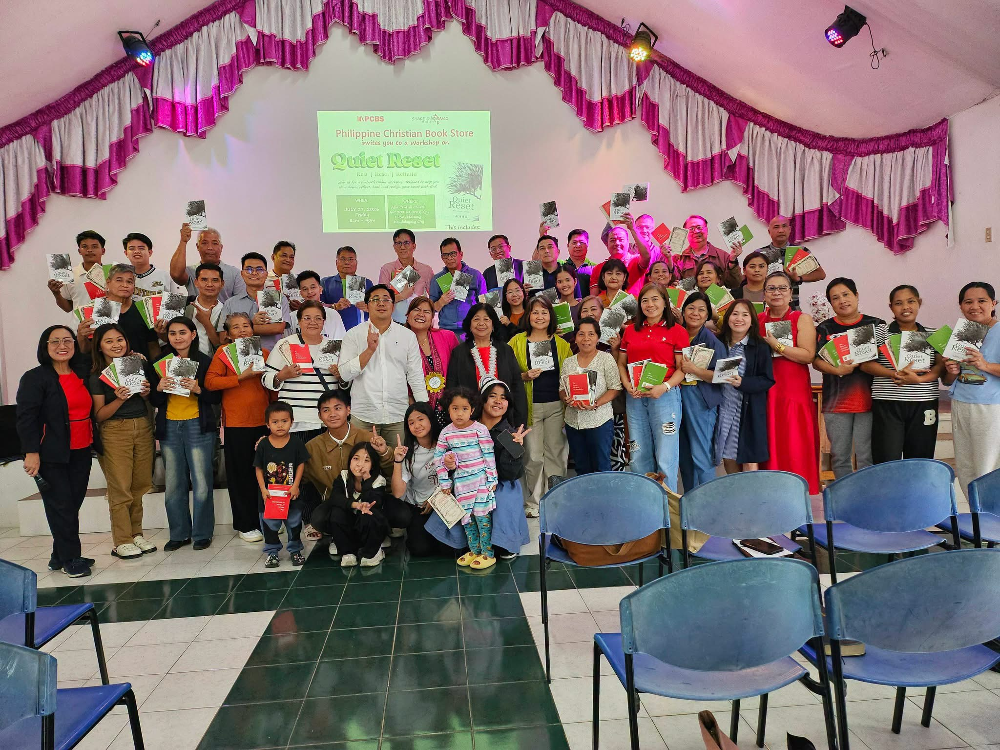
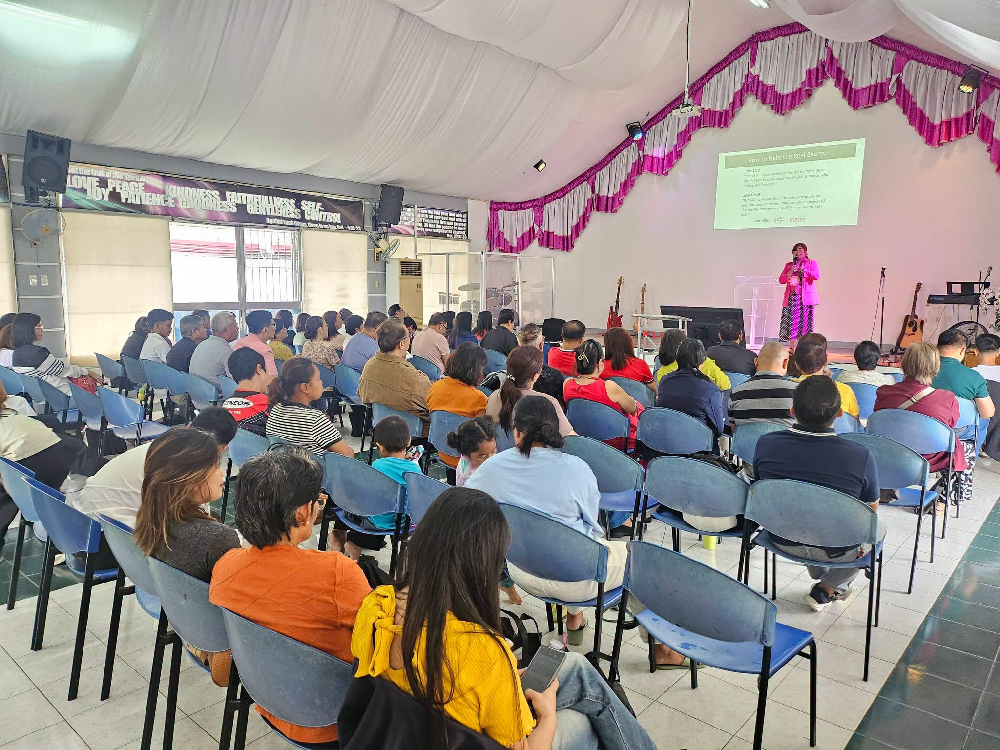
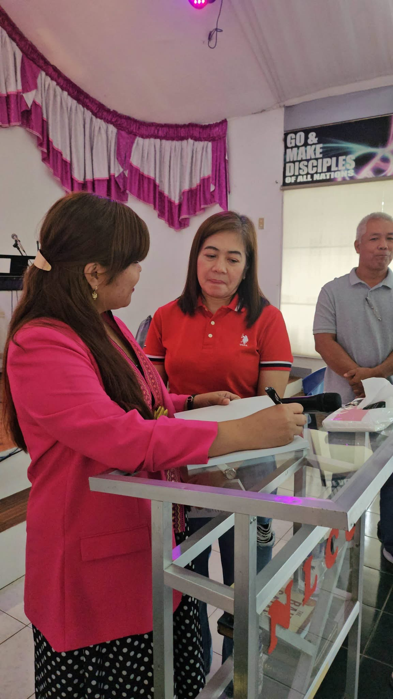

Maybe this silence
isn’t the end.
Maybe it’s God’s invitation to a new beginning.
What happens when the life you built begins unraveling, not with a loud crash, but in quiet exhaustion? Ladyh Joy O. guides you through a raw journey of unspoken loss, deep surrender, and biblical restoration.

SAVE THESE DATES 2026
A workshop on healing, stillness, and finding your way back to God — especially for leaders and ministry workers who feel unseen.
Women Convention, Pampanga
Mabalacat Christian Community Church, 455 Purok 3, Mawaque Malati, Mabalacat City
Santiago, Isabela
Regional Community Gathering & Leadership Restoration Workshop
Tuguegarao Soulwinners For Christ Fellowship
St. Stephen St., Ugac Sur, Tuguegarao
Aparri, Cagayan
Quiet Reset Fellowship & Ministry Care Gathering
Roxas, Isabela
Stillness, Prayer, and Inner Healing Session
Cavite
South Luzon Believers & Leaders Quiet Reset Conference
Caloocan
Metro North Workshop on Healing, Stillness & Renewal
Fairview, Quezon City
Year-End Reset & Rebuilding Assembly
Our Community Gatherings
Real stories of inner healing, leaders pausing, and lives restored through the Quiet Reset movement.



Hover over photos to pause

Crafted for Quietness & Reflection
A tactile experience created to invite stillness into your everyday rhythm. Soft-touch matte cover, generous margins for personal journaling, and durable binding made to travel with you into private prayer retreats.
You Don't Have To Carry It Alone
“Some prayers are spoken out loud. Others stay quietly in our hearts.”
Whatever season you're in — tears, hopes, questions, or silent burnout — we would be deeply honored to stand in prayer with you. Your prayer matters. God cares.
Send Us Your Prayer RequestA Pathway From Striving to Peace
Quiet Reset is built upon three transformative movements to guide your soul back to true stillness.
Rest
Cease the Exhausting Strive
Find genuine rest in God when everything feels uncertain. Release the unspoken guilt of pausing and acknowledge your fatigue.
Reset
Untangle Hidden Wounds
Reset your heart and mind with biblical truth. Forgive silent betrayals and let God reshape your definitions of victory.
Rebuild
Construct with Eternal Vision
Rebuild a sustainable rhythm for your life, family, and calling without sacrificing your soul for worldly milestones.
Frequently Asked Questions
Everything you need to know about Quiet Reset, the heart behind it, and how to read it.
Who Is This Book For?
Click on any card to read Ladyh Joy O.'s personal letter and Scripture anchor for your season.
Choose Your Quiet Reset Journey
All orders include botanical packaging, signature bookmarks, and nationwide courier delivery.
Quiet Reset Paperback
The complete official 300+ page paperback edition with soft-touch matte finish and gold-embossed details.
- 1x Quiet Reset Book
- Botanical Olive Leaf Bookmark
- Dedication & Blessing Card
Restoration Journal Set
Created for deeply intentional quiet times, private prayer retreats, and morning devotions.
- 1x Signed Quiet Reset Book
- 90-Day Guided Hardbound Journal
- Set of 7 Scripture Art Cards
- FREE Nationwide Delivery
Small Group 5-Pack
Equip your church leaders, study circles, workplace wellness groups, or couple study teams.
- 5x Quiet Reset Books
- 6-Week Discussion Guide (PDF)
- 5x Olive Leaf Bookmarks
- FREE Nationwide Delivery
Stories From Our Readers
Read how God is using these pages to bring stillness and clarity across the country.